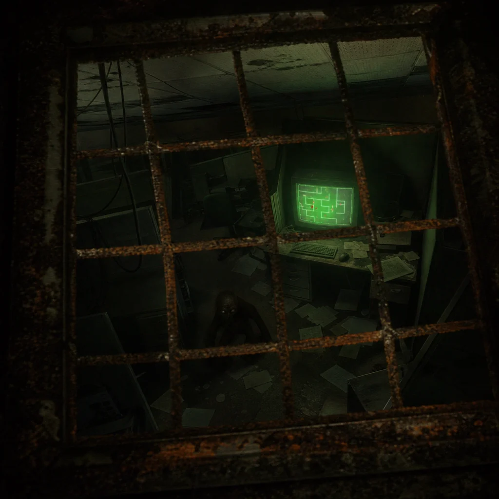

The grate is warm. Below it, the office terminal glows like an aquarium light. You can see the cursor moving by itself, typing commands no hands entered.
The screen below prints a map of the maze. The map is wrong in the way dreams are wrong: emotionally precise, spatially illegal. A red dot labeled YOU? blinks in three rooms at once.
Observation changes the observed. The Backrooms knows this and performs shyness badly. Something below the grate looks up exactly one second before you make a sound.
record the witness slit